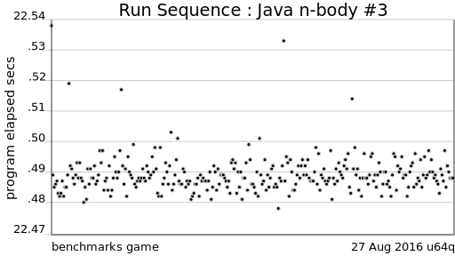
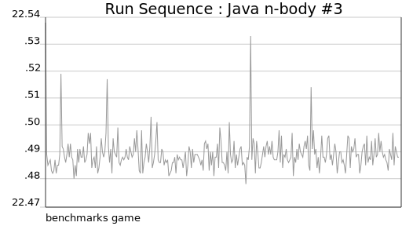
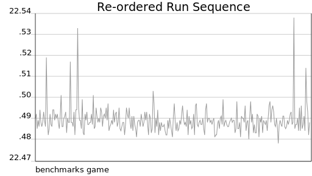

Toy benchmark programs
Computer Architecture: A Quantitative Approach
So, why measure toy benchmark programs?
You don't have time to inspect the source code of real applications to check that different implementations are kind-of comparable. Is it really the same program when written in different programming languages?
You do have time to inspect 100-line programs. You do have time to write 100-line programs. You still might have something to learn from how other people write 100-line programs.
Or even acknowledge — Anyone else a bit shocked by how well Javascript on V8 performs? I might need to rethink my assumptions…
Non-motivation
We are profoundly uninterested in claims that these measurements, of a few tiny programs, somehow define the relative performance of programming languages aka Which programming language is fastest?
.
4chan
My question is if anyone here has any experience with simplistic benchmarking and could tell me which things to test for in order to get a simple idea of each language's general performance?
So explore!
Make run-sequence charts and check that the data is stable, without regularities or patterns.

Make charts of the same data randomly re-ordered and check for systematic differences.

Make lag charts and check. Make auto-correlation function charts and check.
Explore the data to find out what kind-of repetition and how much repetition is needed in the study.
In particular, don't assume that after an arbitrary warmup phase JIT compilers must improve program performance -- It ain't necessarily so.
In stark contrast to the traditional expectation of warmup
, some benchmarks exhibit slowdown
, where the performance of in-process iterations drops over time.
Initial comparisons
The 4chan poster needed to show comparisons between their academic research implementation and other programming language implementations. Like [pdf] diverse researchers, over the past decade, they may decide to use the benchmarks game as a convenient source of comparison programs.
Alternatively, for their initial assessment of compiler effectiveness, they may find the more-rigid less-permissive guidelines of Are We Fast Yet?
helpful.
If some of those guidelines seem arbitrary, a language implementor may feel that is less important than the possibility that there will be identifiable opportunities to improve performance.
The Real World
… doing effective research on the Java platform requires benchmarks that are both real and more complex than benchmark suites used to evaluate languages like C, C++, and Fortran.
… the JavaScript benchmarks are fleetingly small, and behave in ways that are significantly different than the real applications. We have documented numerous differences in behavior, and we conclude from these measured differences that results based on the benchmarks may mislead JavaScript engine implementers. Furthermore, we observe interesting behaviors in real JavaScript applications that the benchmarks fail to exhibit, suggesting that previously unexplored optimization strategies may be productive in practice.
The large number of projects available in public code repositories, along with the widespread adoption of unit testing in software development, have created a new source of potential benchmark workloads.
For example, the [pdf] Renaissance Benchmarking Suite for Java —
To obtain these benchmarks, we gathered a large list of candidate workloads, both manually and by scanning an online corpus of GitHub projects.
Reimplement and measure your application
When different programming languages are to be evaluated as-implementation-tools for an existing application, in-house knowledge of current productivity and performance bottlenecks can be used to make the evaluation specific and relevant.
These are full-fledged applications in the sense that they fully support a typical preparation pipeline for variant calling consisting of sorting reads, duplicate marking, and a few other commonly used steps. While these three reimplementations … only support a limited set of functionality, in each case the software architecture could be completed with additional effort to support all features…
Citation
Gouy, Isaac. The Computer Language Benchmarks Game. Web.<https://benchmarksgame-team.pages.debian.net/benchmarksgame/>.